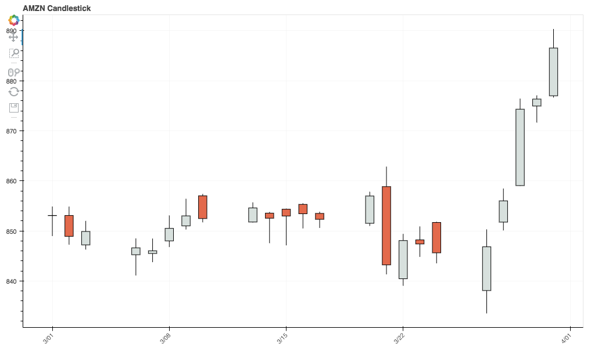
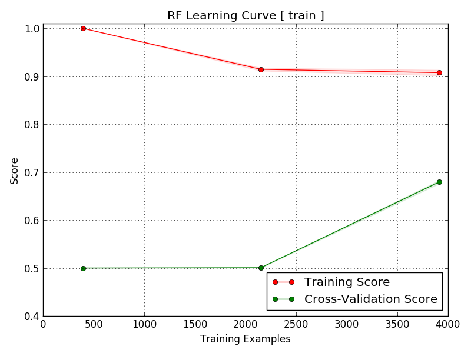
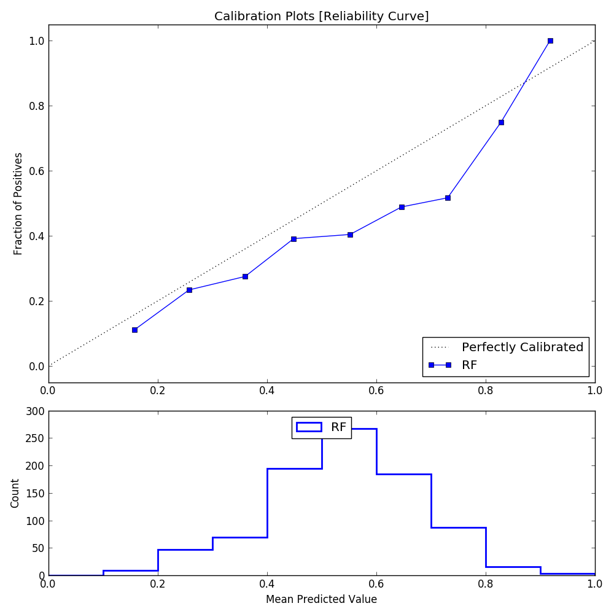

Market Prediction Tutorial
MarketFlow Running Time: Approximately 6 minutes
{kind=link}
Machine learning subsumes technical analysis because collectively, technical analysis is just a set of features for market prediction. We can use machine learning as a feature blender for moving averages, indicators such as RSI and ADX, and even representations of chart formations such as double tops and head-and-shoulder patterns.
We are not directly predicting net return in our models, although that is the ultimate goal. By characterizing the market with models, we can increase the Return On Investment (ROI). We have a wide range of dependent or target variables from which to choose, not just net return. There is more power in building a classifier rather than a more traditional regression model, so we want to define binary conditions such as whether or not today is going to be a trend day, rather than a numerical prediction of today’s return.
In this tutorial, we will train a model that predicts whether or not the next day will have a larger-than-average range. This is important for deciding which system to deploy on the prediction day. If our model gives us predictive power, then we can filter out those days where trading a given system is a losing strategy.
Step 1: From the examples directory, change your
directory:
cd "Trading Model"
Before running MarketFlow, let’s briefly review the configuration
files in the config directory:
market.yml:The MarketFlow configuration file
model.yml:The AlphaPy configuration file
In market.yml, we limit our model to six stocks in the target
group test, going back 2000 trading days. You can define any
group of stock symbols in the groups section, and then set
the target_group attribute in the market section to the
name of that group.
This is a 1-day forecast, but we also use those features that can
be calculated at the market open, such as gap information in the
leaders section. In the features section, we define many
variables for moving averages, historical range, RSI, volatility,
and volume.
market:
create_model : True
data_fractal : 1d
data_history : 500
forecast_period : 1
fractal : 1d
lag_period : 1
leaders : ['gap', 'gapbadown', 'gapbaup', 'gapdown', 'gapup']
predict_history : 100
schema : yahoo
subject : stock
target_group : test
groups:
all : ['aaoi', 'aapl', 'acia', 'adbe', 'adi', 'adp', 'agn', 'aig', 'akam',
'algn', 'alk', 'alxn', 'amat', 'amba', 'amd', 'amgn', 'amt', 'amzn',
'antm', 'arch', 'asml', 'athn', 'atvi', 'auph', 'avgo', 'axp', 'ayx',
'azo', 'ba', 'baba', 'bac', 'bby', 'bidu', 'biib', 'brcd', 'bvsn',
'bwld', 'c', 'cacc', 'cara', 'casy', 'cat', 'cde', 'celg', 'cern',
'chkp', 'chtr', 'clvs', 'cme', 'cmg', 'cof', 'cohr', 'comm', 'cost',
'cpk', 'crm', 'crus', 'csco', 'ctsh', 'ctxs', 'csx', 'cvs', 'cybr',
'data', 'ddd', 'deck', 'dgaz', 'dia', 'dis', 'dish', 'dnkn', 'dpz',
'drys', 'dust', 'ea', 'ebay', 'edc', 'edz', 'eem', 'elli', 'eog',
'esrx', 'etrm', 'ewh', 'ewt', 'expe', 'fang', 'fas', 'faz', 'fb',
'fcx', 'fdx', 'ffiv', 'fit', 'five', 'fnsr', 'fslr', 'ftnt', 'gddy',
'gdx', 'gdxj', 'ge', 'gild', 'gld', 'glw', 'gm', 'googl', 'gpro',
'grub', 'gs', 'gwph', 'hal', 'has', 'hd', 'hdp', 'hlf', 'hog', 'hum',
'ibb', 'ibm', 'ice', 'idxx', 'ilmn', 'ilmn', 'incy', 'intc', 'intu',
'ip', 'isrg', 'iwm', 'ivv', 'iwf', 'iwm', 'jack', 'jcp', 'jdst', 'jnj',
'jnpr', 'jnug', 'jpm', 'kite', 'klac', 'ko', 'kss', 'labd', 'labu',
'len', 'lite', 'lmt', 'lnkd', 'lrcx', 'lulu', 'lvs', 'mbly', 'mcd',
'mchp', 'mdy', 'meoh', 'mnst', 'mo', 'momo', 'mon', 'mrk', 'ms', 'msft',
'mtb', 'mu', 'nflx', 'nfx', 'nke', 'ntap', 'ntes', 'ntnx', 'nugt',
'nvda', 'nxpi', 'nxst', 'oii', 'oled', 'orcl', 'orly', 'p', 'panw',
'pcln', 'pg', 'pm', 'pnra', 'prgo', 'pxd', 'pypl', 'qcom', 'qqq',
'qrvo', 'rht', 'sam', 'sbux', 'sds', 'sgen', 'shld', 'shop', 'sig',
'sina', 'siri', 'skx', 'slb', 'slv', 'smh', 'snap', 'sncr', 'soda',
'splk', 'spy', 'stld', 'stmp', 'stx', 'svxy', 'swks', 'symc', 't',
'tbt', 'teva', 'tgt', 'tho', 'tlt', 'tmo', 'tna', 'tqqq', 'trip',
'tsla', 'ttwo', 'tvix', 'twlo', 'twtr', 'tza', 'uaa', 'ugaz', 'uhs',
'ulta', 'ulti', 'unh', 'unp', 'upro', 'uri', 'ups', 'uri', 'uthr',
'utx', 'uvxy', 'v', 'veev', 'viav', 'vlo', 'vmc', 'vrsn', 'vrtx', 'vrx',
'vwo', 'vxx', 'vz', 'wday', 'wdc', 'wfc', 'wfm', 'wmt', 'wynn', 'x',
'xbi', 'xhb', 'xiv', 'xle', 'xlf', 'xlk', 'xlnx', 'xom', 'xlp', 'xlu',
'xlv', 'xme', 'xom', 'wix', 'yelp', 'z']
etf : ['dia', 'dust', 'edc', 'edz', 'eem', 'ewh', 'ewt', 'fas', 'faz',
'gld', 'hyg', 'iwm', 'ivv', 'iwf', 'jnk', 'mdy', 'nugt', 'qqq',
'sds', 'smh', 'spy', 'tbt', 'tlt', 'tna', 'tvix', 'tza', 'upro',
'uvxy', 'vwo', 'vxx', 'xhb', 'xiv', 'xle', 'xlf', 'xlk', 'xlp',
'xlu', 'xlv', 'xme']
tech : ['aapl', 'adbe', 'amat', 'amgn', 'amzn', 'avgo', 'baba', 'bidu',
'brcd', 'csco', 'ddd', 'emc', 'expe', 'fb', 'fit', 'fslr', 'goog',
'intc', 'isrg', 'lnkd', 'msft', 'nflx', 'nvda', 'pcln', 'qcom',
'qqq', 'tsla', 'twtr']
test : ['aapl', 'amzn', 'goog', 'fb', 'nvda', 'tsla']
features: ['abovema_3', 'abovema_5', 'abovema_10', 'abovema_20', 'abovema_50',
'adx', 'atr', 'bigdown', 'bigup', 'diminus', 'diplus', 'doji',
'gap', 'gapbadown', 'gapbaup', 'gapdown', 'gapup',
'hc', 'hh', 'ho', 'hl', 'lc', 'lh', 'll', 'lo', 'hookdown', 'hookup',
'inside', 'outside', 'madelta_3', 'madelta_5', 'madelta_7', 'madelta_10',
'madelta_12', 'madelta_15', 'madelta_18', 'madelta_20', 'madelta',
'net', 'netdown', 'netup', 'nr_3', 'nr_4', 'nr_5', 'nr_7', 'nr_8',
'nr_10', 'nr_18', 'roi', 'roi_2', 'roi_3', 'roi_4', 'roi_5', 'roi_10',
'roi_20', 'rr_1_4', 'rr_1_7', 'rr_1_10', 'rr_2_5', 'rr_2_7', 'rr_2_10',
'rr_3_8', 'rr_3_14', 'rr_4_10', 'rr_4_20', 'rr_5_10', 'rr_5_20',
'rr_5_30', 'rr_6_14', 'rr_6_25', 'rr_7_14', 'rr_7_35', 'rr_8_22',
'rrhigh', 'rrlow', 'rrover', 'rrunder', 'rsi_3', 'rsi_4', 'rsi_5',
'rsi_6', 'rsi_8', 'rsi_10', 'rsi_14', 'sep_3_3', 'sep_5_5', 'sep_8_8',
'sep_10_10', 'sep_14_14', 'sep_21_21', 'sep_30_30', 'sep_40_40',
'sephigh', 'seplow', 'trend', 'vma', 'vmover', 'vmratio', 'vmunder',
'volatility_3', 'volatility_5', 'volatility', 'volatility_20',
'wr_2', 'wr_3', 'wr', 'wr_5', 'wr_6', 'wr_7', 'wr_10']
aliases:
atr : 'ma_truerange'
aver : 'ma_hlrange'
cma : 'ma_close'
cmax : 'highest_close'
cmin : 'lowest_close'
hc : 'higher_close'
hh : 'higher_high'
hl : 'higher_low'
ho : 'higher_open'
hmax : 'highest_high'
hmin : 'lowest_high'
lc : 'lower_close'
lh : 'lower_high'
ll : 'lower_low'
lo : 'lower_open'
lmax : 'highest_low'
lmin : 'lowest_low'
net : 'net_close'
netdown : 'down_net'
netup : 'up_net'
omax : 'highest_open'
omin : 'lowest_open'
rmax : 'highest_hlrange'
rmin : 'lowest_hlrange'
rr : 'maratio_hlrange'
rixc : 'rindex_close_high_low'
rixo : 'rindex_open_high_low'
roi : 'netreturn_close'
rsi : 'rsi_close'
sepma : 'ma_sep'
vma : 'ma_volume'
vmratio : 'maratio_volume'
upmove : 'net_high'
variables:
abovema : 'close > cma_50'
belowma : 'close < cma_50'
bigup : 'rrover & sephigh & netup'
bigdown : 'rrover & sephigh & netdown'
doji : 'sepdoji & rrunder'
hookdown : 'open > high[1] & close < close[1]'
hookup : 'open < low[1] & close > close[1]'
inside : 'low > low[1] & high < high[1]'
madelta : '(close - cma_50) / atr_10'
nr : 'hlrange == rmin_4'
outside : 'low < low[1] & high > high[1]'
roihigh : 'roi_5 >= 5'
roilow : 'roi_5 < -5'
roiminus : 'roi_5 < 0'
roiplus : 'roi_5 > 0'
rrhigh : 'rr_1_10 >= 1.2'
rrlow : 'rr_1_10 <= 0.8'
rrover : 'rr_1_10 >= 1.0'
rrunder : 'rr_1_10 < 1.0'
sep : 'rixc_1 - rixo_1'
sepdoji : 'abs(sep) <= 15'
sephigh : 'abs(sep_1_1) >= 70'
seplow : 'abs(sep_1_1) <= 30'
trend : 'rrover & sephigh'
vmover : 'vmratio >= 1'
vmunder : 'vmratio < 1'
volatility : 'atr_10 / close'
wr : 'hlrange == rmax_4'
In each of the tutorials, we experiment with different options in
model.yml to run AlphaPy. Here, we first apply univariate feature
selection and then run a random forest classifier with Recursive
Feature Elimination, including Cross-Validation (RFECV). When you
choose RFECV, the process takes much longer, so if you want to see
more logging, then increase the verbosity level in the pipeline
section.
Since stock prices are time series data, we apply the runs_test
function to twelve features in the treatments section. Treatments
are powerful because you can write any function to extrapolate new
features from existing ones. AlphaPy provides some of these functions
in the alphapy.features module, but it can also import external
functions as well.
Our target variable is rrover, the ratio of the 1-day range to
the 10-day average high/low range. If that ratio is greater than
or equal to 1.0, then the value of rrover is True. This is
what we are trying to predict.
project:
directory : .
file_extension : csv
submission_file :
submit_probas : False
data:
drop : ['date', 'tag', 'open', 'high', 'low', 'close', 'volume', 'adjclose',
'low[1]', 'high[1]', 'net', 'close[1]', 'rmin_3', 'rmin_4', 'rmin_5',
'rmin_7', 'rmin_8', 'rmin_10', 'rmin_18', 'pval', 'mval', 'vma',
'rmax_2', 'rmax_3', 'rmax_4', 'rmax_5', 'rmax_6', 'rmax_7', 'rmax_10']
features : '*'
sampling :
option : True
method : under_random
ratio : 0.5
sentinel : -1
separator : ','
shuffle : True
split : 0.4
target : rrover
target_value : True
model:
algorithms : ['RF']
balance_classes : True
calibration :
option : False
type : isotonic
cv_folds : 3
estimators : 501
feature_selection :
option : True
percentage : 50
uni_grid : [5, 10, 15, 20, 25]
score_func : f_classif
grid_search :
option : False
iterations : 100
random : True
subsample : True
sampling_pct : 0.25
pvalue_level : 0.01
rfe :
option : True
step : 10
scoring_function : 'roc_auc'
type : classification
features:
clustering :
option : False
increment : 3
maximum : 30
minimum : 3
counts :
option : False
encoding :
rounding : 3
type : factorize
factors : []
interactions :
option : True
poly_degree : 2
sampling_pct : 5
isomap :
option : False
components : 2
neighbors : 5
logtransform :
option : False
numpy :
option : False
pca :
option : False
increment : 3
maximum : 15
minimum : 3
whiten : False
scaling :
option : True
type : standard
scipy :
option : False
text :
ngrams : 1
vectorize : False
tsne :
option : False
components : 2
learning_rate : 1000.0
perplexity : 30.0
variance :
option : True
threshold : 0.1
treatments:
doji : ['alphapy.features', 'runs_test', ['all'], 18]
hc : ['alphapy.features', 'runs_test', ['all'], 18]
hh : ['alphapy.features', 'runs_test', ['all'], 18]
hl : ['alphapy.features', 'runs_test', ['all'], 18]
ho : ['alphapy.features', 'runs_test', ['all'], 18]
rrhigh : ['alphapy.features', 'runs_test', ['all'], 18]
rrlow : ['alphapy.features', 'runs_test', ['all'], 18]
rrover : ['alphapy.features', 'runs_test', ['all'], 18]
rrunder : ['alphapy.features', 'runs_test', ['all'], 18]
sephigh : ['alphapy.features', 'runs_test', ['all'], 18]
seplow : ['alphapy.features', 'runs_test', ['all'], 18]
trend : ['alphapy.features', 'runs_test', ['all'], 18]
pipeline:
number_jobs : -1
seed : 10231
verbosity : 0
plots:
calibration : True
confusion_matrix : True
importances : True
learning_curve : True
roc_curve : True
xgboost:
stopping_rounds : 20
Step 2: Now, let’s run MarketFlow:
mflow --pdate 2017-10-01
As mflow runs, you will see the progress of the workflow,
and the logging output is saved in market_flow.log. When the
workflow completes, your project structure will look like this,
with a different datestamp:
Trading Model
├── market_flow.log
├── config
├── algos.yml
├── market.yml
├── model.yml
└── data
└── input
├── test_20170420.csv
├── test.csv
├── train_20170420.csv
├── train.csv
└── model
├── feature_map_20170420.pkl
├── model_20170420.pkl
└── output
├── predictions_20170420.csv
├── probabilities_20170420.csv
├── rankings_20170420.csv
└── plots
├── calibration_test.png
├── calibration_train.png
├── confusion_test_RF.png
├── confusion_train_RF.png
├── feature_importance_train_RF.png
├── learning_curve_train_RF.png
├── roc_curve_test.png
├── roc_curve_train.png
Let’s look at the results in the plots directory. Since our
scoring function was roc_auc, we examine the ROC Curve first.
The AUC is approximately 0.61, which is not very high but in the
context of the stock market, we may still be able to derive
some predictive power. Further, we are running the model on a
relatively small sample of stocks, as denoted by the jittery
line of the ROC Curve.
{kind=link}
We can benefit from more samples, as the learning curve shows that the training and cross-validation lines have yet to converge.
{kind=link}
The good news is that even with a relatively small number of testing points, the Reliability Curve slopes upward from left to right, with the dotted line denoting a perfect classifier.
{kind=link}
To get better accuracy, we can raise our threshold to find the best candidates, since they are ranked by probability, but this also means limiting our pool of stocks. Let’s take a closer look at the rankings file.
Step 3: From the command line, enter:
jupyter notebook
Step 4: Click on the notebook named:
A Trading Model.ipynb
Step 5: Run the commands in the notebook, making sure that
when you read in the rankings file, change the date to match
the result from the ls command.
Conclusion We can predict large-range days with some confidence,
but only at a higher probability threshold. This is important for
choosing the correct system on any given day. We can achieve
better results with more data, so we recommend expanding the
stock universe, e.g., a group with at least 100 members going
five years back.